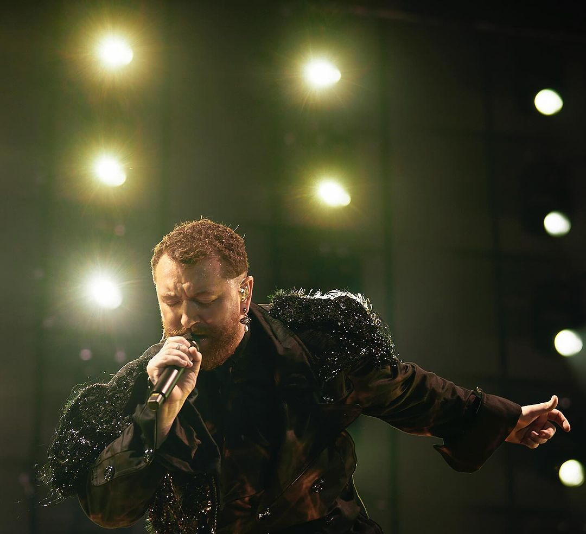

SAM SMITH
Sam Smith Regresa Triunfalmente a Argentina: Un Encuentro con la Gloria Musical
Cinco años han pasado desde que Sam Smith iluminó por última vez los escenarios argentinos con su voz inigualable y su presencia cautivadora. Pero en el Lollapalooza 2024, el esperado regreso de esta superestrella británica marcó una noche de reencuentro, emoción y una dosis generosa de su nuevo álbum "Gloria".
Con el estreno de su hit "Unholy" en boca de todos, la anticipación era palpable cuando Sam Smith apareció en el escenario, listo para deleitar a la multitud con su talento único. Desde el momento en que las primeras notas resonaron en el aire, quedó claro que esta sería una noche para recordar.
Con su característica vulnerabilidad y pasión, Smith llevó a la audiencia en un viaje emocional a través de sus nuevas canciones, desde baladas desgarradoras hasta himnos de empoderamiento. Cada nota estaba impregnada de una sinceridad palpable, haciendo que incluso los corazones más duros se conmovieran.
Pero también hubo espacio para los clásicos que los fans han amado durante años. Éxitos como "Stay With Me" y "Too Good at Goodbyes" resonaron en el aire, recordándonos por qué nos enamoramos de la voz de Sam Smith en primer lugar. Y con cada canción, el vínculo entre el artista y su público solo parecía fortalecerse.
Pero más allá de su incomparable talento musical, lo que realmente destacó de la presentación de Sam Smith fue su autenticidad y su conexión con la audiencia. Entre canción y canción, compartió historias personales, reflexiones profundas y palabras de agradecimiento con aquellos que habían esperado tanto para verlo de nuevo en vivo.
Y cuando llegó el momento de despedirse, la multitud quedó en un estado de éxtasis y gratitud. Los aplausos ensordecedores y los coros de "¡otra canción!" llenaron el aire, dejando claro que el regreso de Sam Smith a Argentina fue más que un concierto; fue un encuentro con la gloria musical que resonará en los corazones de todos los presentes por mucho tiempo después de que las luces se hayan apagado.
En resumen, el regreso triunfal de Sam Smith a Argentina en el Lollapalooza 2024 fue una noche mágica e inolvidable. Con su talento indiscutible, su carisma arrollador y su corazón abierto, Smith demostró una vez más por qué es una de las estrellas más brillantes y queridas de la música actual. Y para aquellos que tuvieron el privilegio de estar presentes esa noche, será un recuerdo que atesorarán para siempre.
Sam Smith: La Voz Emotiva que Conmovió al Mundo
En el panorama musical actual, pocas voces tienen el poder de tocar el corazón y el alma como la de Sam Smith. Nacido el 19 de mayo de 1992 en Londres, Reino Unido, Samuel Frederick Smith rápidamente se convirtió en una de las figuras más destacadas del pop y el soul contemporáneo, cautivando a audiencias de todo el mundo con su talento inigualable y su honestidad conmovedora.
Desde una edad temprana, Smith demostró un don extraordinario para la música. Criado en una familia que apreciaba la diversidad de géneros musicales, pronto descubrió su pasión por el canto y comenzó a cultivar su talento con dedicación y determinación. Aunque inicialmente enfrentó desafíos y rechazos en la industria musical, nunca renunció a su sueño de compartir su voz con el mundo.
El punto de inflexión en la carrera de Smith llegó en 2012, cuando colaboró con el dúo británico Disclosure en la canción "Latch".
En 2014, Smith lanzó su álbum debut, "In the Lonely Hour", que lo consagró como una de las estrellas más brillantes del pop contemporáneo. El álbum fue un éxito arrollador, encabezando las listas de éxitos en todo el mundo y ganando numerosos premios, incluidos varios premios Grammy. Canciones como "Stay With Me" y "I'm Not the Only One" se convirtieron en himnos para una generación que buscaba consuelo en medio del dolor y la soledad.
Pero más allá de su éxito comercial, lo que realmente distingue a Smith es su honestidad y vulnerabilidad en su música. A través de sus letras sinceras y su entrega emotiva, ha tocado temas universales como el amor, el dolor y la identidad de una manera que resuena profundamente con la audiencia. Su capacidad para conectar con las emociones humanas más profundas es lo que lo convierte en un artista verdaderamente excepcional.
En los años siguientes, Smith continuó desafiando las expectativas y explorando nuevos territorios musicales con álbumes como "The Thrill of It All" y "Love Goes". Su último álbum, "Gloria", es una celebración de su viaje personal y artístico, y muestra su evolución como músico y como persona.
Hoy en día, Sam Smith sigue siendo una de las voces más influyentes y respetadas de la música contemporánea. Con cada nota que canta y cada canción que compone, continúa inspirando a millones de personas en todo el mundo a través de su talento y su autenticidad. Y aunque su viaje musical aún está en curso, una cosa es segura: la voz emotiva de Sam Smith seguirá conmoviendo al mundo durante muchos años más.